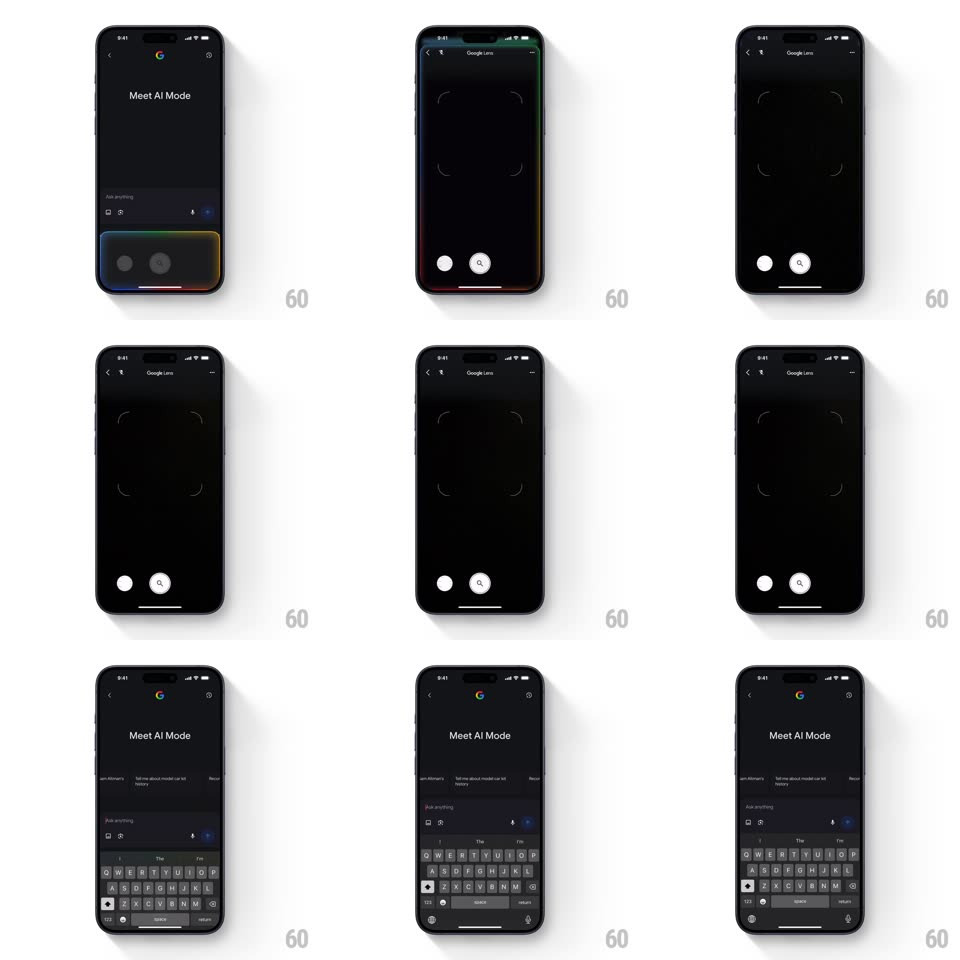

Media
Frame-by-frame

Rebuild this animation 1:1: Google Lens' camera standby - a multi-colored gradient border glows around the screen edges and pulses slowly while the viewfinder waits, fading out once capture starts.

Rebuild this animation 1:1: Google Lens' camera standby - a multi-colored gradient border glows around the screen edges and pulses slowly while the viewfinder waits, fading out once capture starts. ## Integration Integration: stack-agnostic spec - springs given as stiffness/damping, timed motions as duration + curve; map every value to your framework and animation library of choice. ## Scene Dark Google Lens camera view: corner-bracket reticle, shutter and search buttons at the bottom; a thin gradient border (Google blue -> red -> yellow -> green) hugs the screen edges. The clip also shows the "Meet AI Mode" intro sheet with keyboard before the camera. ## Motion spec Pattern: breathing edge-glow, ~3s loop. - Standby: the gradient border fades in (300ms) and pulses - its glow brightness and spread oscillate (opacity 0.5 -> 0.9, spread 2 -> 6px, 3s, ease-in-out, infinite). - The gradient hue slowly rotates around the frame (full circuit per 12s) so colors travel along the edges. - Capture: on shutter press the border collapses to the top edge and fades (250ms); it returns (300ms) when the camera resets. - The reticle and buttons are static - only the border animates. ## Calibration - The border is a few points thick and inset from the bezel - a screen-edge effect, not a full vignette. - Hue rotation and the brightness pulse run at independent periods. ## Reduced motion Static border at mid brightness, no pulse or hue travel. ## Don't miss - The glow extends slightly inward with a soft falloff. - The border reacts to capture state - standby pulses, capture clears it.